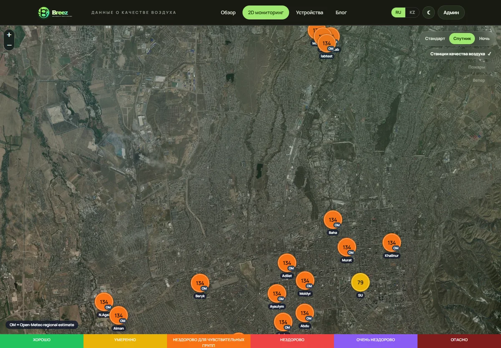
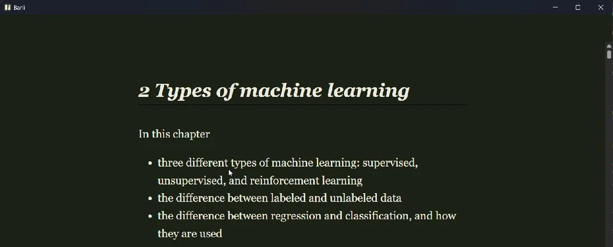

Breez →
Environmental air-quality monitoring.

SOFTWARE ENGINEERING · AI · LANGUAGE
I'm a 3rd-year KBTU student based in Almaty, Kazakhstan. I enjoy building useful software in Python using FastAPI and PostgreSQL, and am actively deepening my TypeScript skills while learning Kazakh through vocabulary, conversation, and speaking practice. I turn ideas into real systems while exploring Machine Learning and Speech Technology.
CURRENTLY BUILDING

Environmental air-quality monitoring.

Knee rehabilitation technology.
AI Phoenix
Application screenshot required
Original capture · 16:9
Medical MRI imaging platform.
Aman AI
Application screenshot required
Original capture · 16:9
Offline-first EPUB/TXT book reader.

Offline-first study workspace.
Limmud
Application screenshot required
Original capture · 16:9
A potion-brewing browser game.
A local-first learning workspace.
Offline algorithm practice app.
LoRA, fine-tuning, and post-training.
Deepening my software engineering skills.
Vocabulary, conversation, and speaking fluency.
Speech recognition and English–Kazakh NLP.